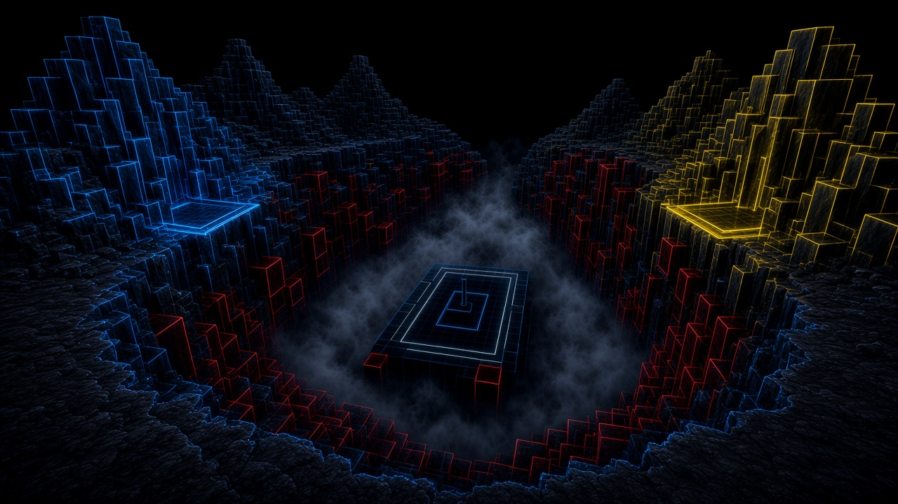
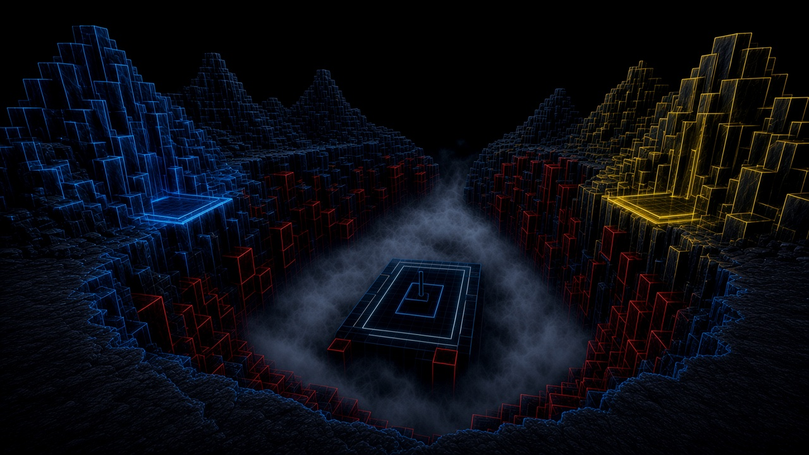
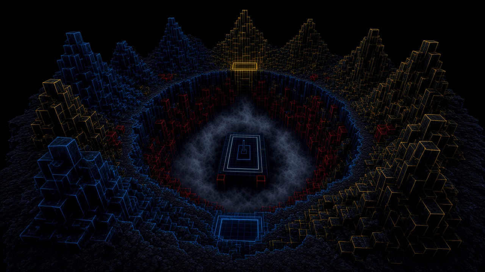
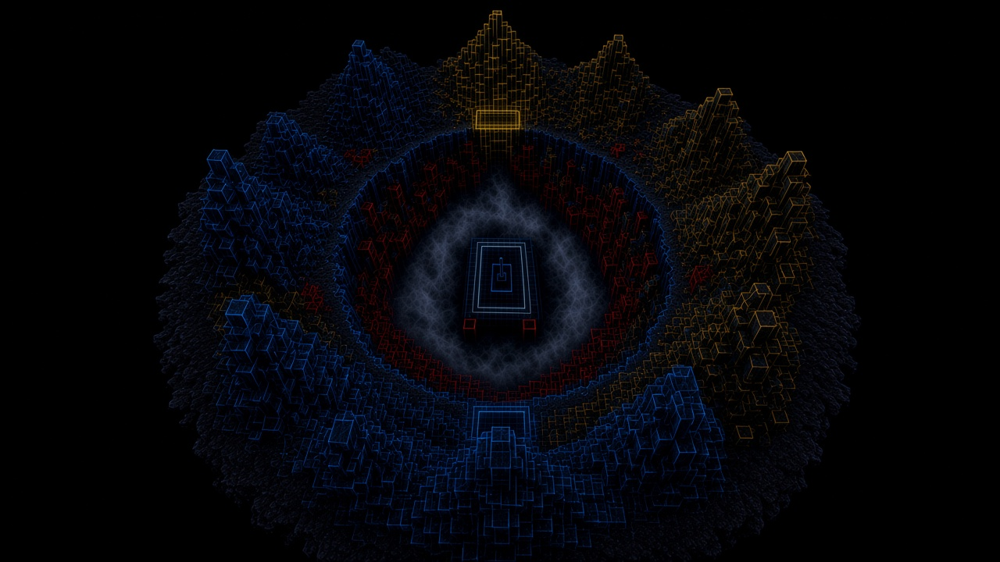
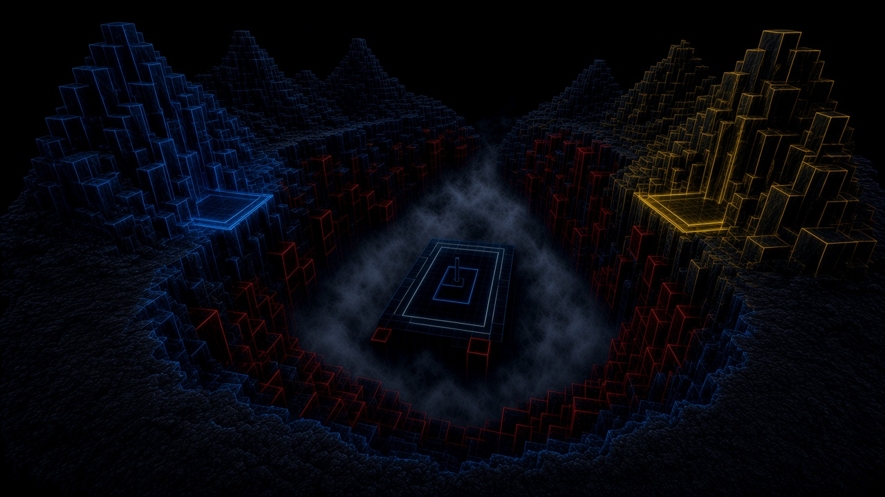
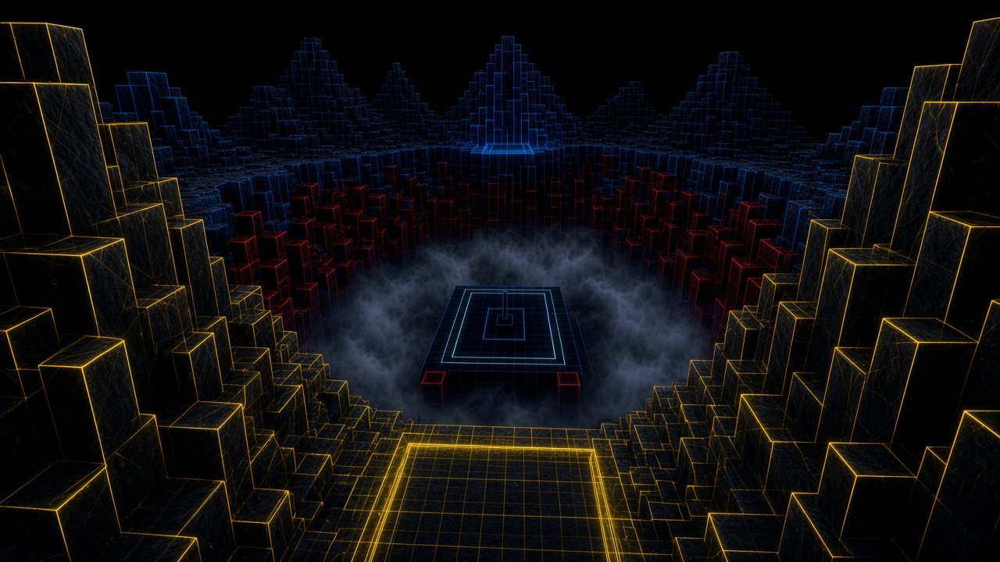
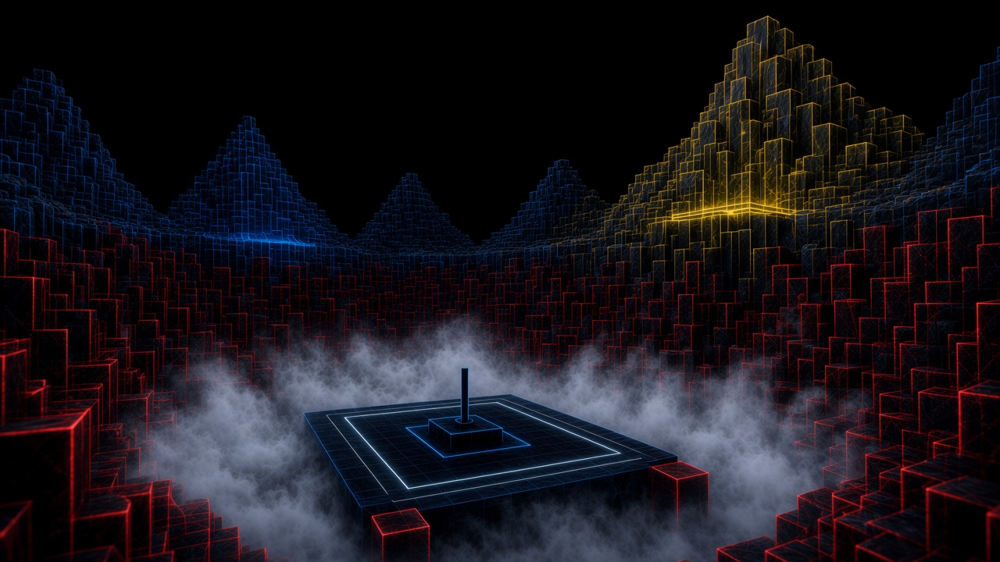
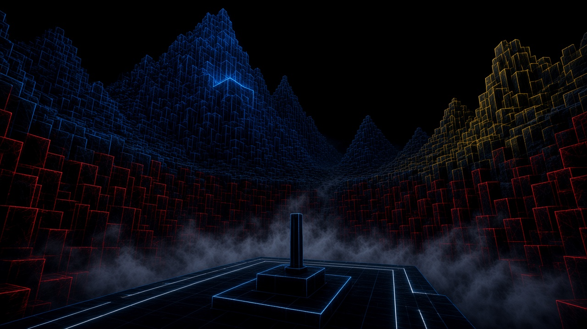

Circular crater reference set
One world, eight cameras. Review in this order. Shape and behavior: ../crater-environment.md








One world, eight cameras. Review in this order. Shape and behavior: ../crater-environment.md







